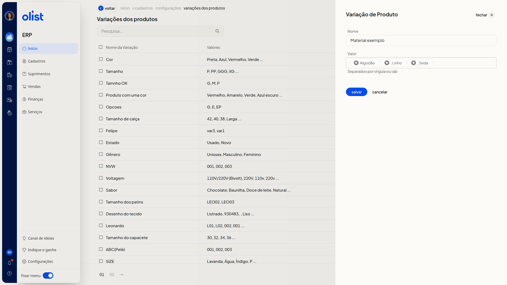
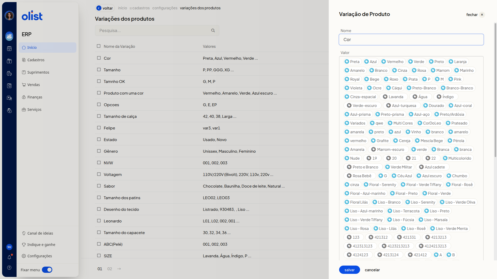
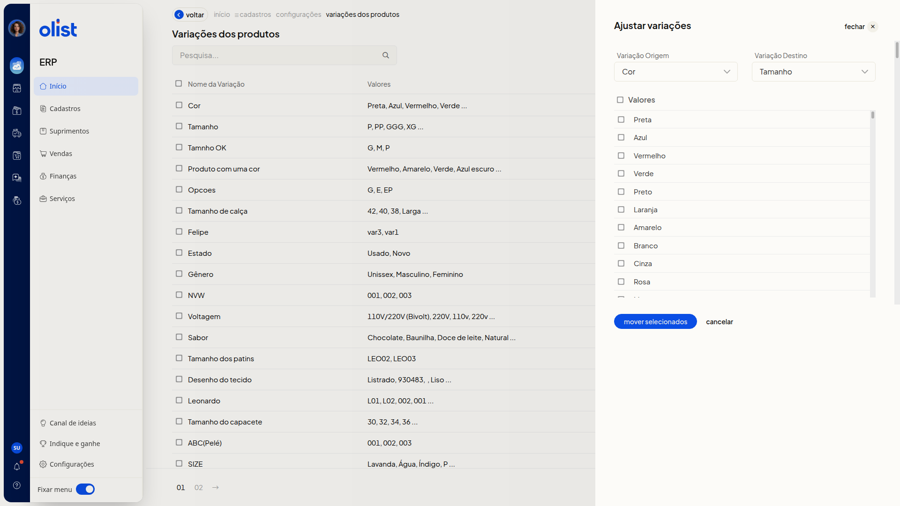

Variações de Produtos - Configurações
A página Variações dos produtos mostra as variações já cadastradas, com o nome e os valores. Nela, você inclui uma variação, revisa ou complementa uma variação existente e ajusta valores entre duas variações.
Importante
Apenas quem tem permissão para configurar variações de produtos acessa a página Variações dos produtos.
Como acessar
Acesse a página Variações dos produtos.
Pré-requisitos
- Para editar ou ajustar, você precisa de uma variação já cadastrada.
- No ajuste, os valores saem da variação escolhida como origem.
Grupos de configuração
Variações dos produtos
A lista reúne as colunas Nome da Variação e Valores. A página indica o total de variações e oferece paginação.
Use o campo Pesquisa... para buscar uma variação.
Incluir variação de produto
Clique em Incluir variação de produto.
Os campos não são obrigatórios.
- Nome: nome da variação.
- Valor: valores com a orientação Separados por vírgula ou tab. Cada valor passa a aparecer como etiqueta.
Use Salvar ou Cancelar. Cancelar fecha o painel e volta à lista, sem gravar.

Variação de Produto
Clique no nome da variação na coluna Nome da Variação.
Os campos não são obrigatórios.
- Nome: nome já preenchido, para revisão ou complemento.
- Valor: valores já exibidos como etiquetas. Novos valores seguem a orientação Separados por vírgula ou tab.
Valores já vinculados a um produto não podem ser alterados.

Use Salvar ou Cancelar. Cancelar volta à lista, sem gravar.
Ajustar variações
Clique em Ajustar variações.
Os campos não são obrigatórios.
- Variação Origem: variação de onde os valores saem. A lista mostra as variações já cadastradas.
- Variação Destino: variação que receberá os valores. A lista mostra as variações já cadastradas.
- Valores: caixas de seleção dos valores da variação de origem. Marque os que devem ser movidos.
A variação selecionada em Variação Origem não aparece em Variação Destino.
Use mover selecionados ou Cancelar. Cancelar fecha o painel, sem mover valores.

Links relacionados
Se precisar de ajuda com as variações de produtos, fale com o suporte.